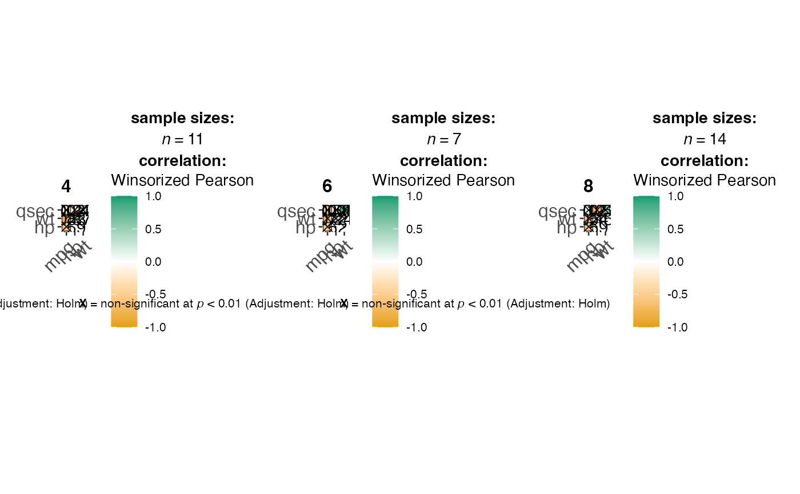
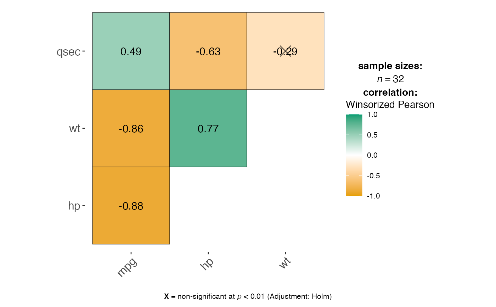

Wrapper Function for ggstatsplot::ggcorrmat and ggstatsplot::grouped_ggcorrmat to generate correlation matrix visualizations with significance testing.
Usage
jjcorrmat(
data,
dep,
grvar,
typestatistics = "parametric",
matrixtype = "upper",
matrixmethod = "square",
siglevel = 0.05,
conflevel = 0.95,
padjustmethod = "holm",
k = 2,
partial = FALSE,
clinicalpreset = "custom",
lowcolor = "#E69F00",
midcolor = "white",
highcolor = "#009E73",
title = "",
subtitle = "",
caption = "",
plotwidth = 600,
plotheight = 450
)Arguments
- data
The data as a data frame.
- dep
List of continuous variables for which the correlation matrix will be computed and visualized. All variables must be numeric.
- grvar
Optional grouping variable to create separate correlation matrices for each level of the grouping variable.
- typestatistics
Type of correlation analysis to perform. 'parametric' uses Pearson correlation, 'nonparametric' uses Spearman's rho, 'robust' uses percentage bend correlation, 'bayes' computes Bayes factors.
- matrixtype
Display upper triangular, lower triangular or full matrix.
- matrixmethod
The visualization method of correlation matrix to be used.
- siglevel
Significance level for marking correlations as insignificant.
- conflevel
Confidence level for confidence intervals.
- padjustmethod
Adjustment method for multiple comparisons.
- k
Number of decimal places for displaying correlation coefficients.
- partial
Compute partial correlations instead of zero-order correlations. Partial correlations control for all other variables in the analysis.
- clinicalpreset
Pre-configured settings optimized for common clinical correlation scenarios. Biomarker: Focus on molecular correlations with robust methods. Lab Values: Emphasize clinical laboratory parameter relationships. Imaging: Specialized for radiological and pathological imaging metrics.
- lowcolor
Color for low (negative) correlation values.
- midcolor
Color for mid (zero) correlation values.
- highcolor
Color for high (positive) correlation values.
- title
Title for the correlation matrix plot.
- subtitle
Subtitle for the correlation matrix plot.
- caption
Caption for the correlation matrix plot.
- plotwidth
Width of the correlation matrix plot in pixels. Default is 600.
- plotheight
Height of the correlation matrix plot in pixels. Default is 450.
Value
A results object containing:
results$todo | a html | ||||
results$interpretation | a html | ||||
results$plot2 | an image | ||||
results$plot | an image |
Examples
# \donttest{
# Load test data
data("mtcars")
# Basic correlation matrix with defaults
jjcorrmat(
data = mtcars,
dep = c("mpg", "hp", "wt", "qsec"),
typestatistics = "parametric"
)
#> Error in jjcorrmat(data = mtcars, dep = c("mpg", "hp", "wt", "qsec"), typestatistics = "parametric"): argument "grvar" is missing, with no default
# Customized correlation matrix
jjcorrmat(
data = mtcars,
dep = c("mpg", "hp", "wt", "qsec", "disp"),
typestatistics = "nonparametric",
matrixtype = "lower",
matrixmethod = "circle",
padjustmethod = "bonferroni",
k = 3,
lowcolor = "blue",
midcolor = "white",
highcolor = "red",
title = "Motor Trend Car Correlations"
)
#> Error in jjcorrmat(data = mtcars, dep = c("mpg", "hp", "wt", "qsec", "disp"), typestatistics = "nonparametric", matrixtype = "lower", matrixmethod = "circle", padjustmethod = "bonferroni", k = 3, lowcolor = "blue", midcolor = "white", highcolor = "red", title = "Motor Trend Car Correlations"): argument "grvar" is missing, with no default
# Grouped correlation matrix by number of cylinders
jjcorrmat(
data = mtcars,
dep = c("mpg", "hp", "wt", "qsec"),
grvar = "cyl",
typestatistics = "robust",
siglevel = 0.01
)
#>
#> CORRELATION MATRIX
#>
#> Preparing correlation analysis options...
#>
#> character(0)


# }